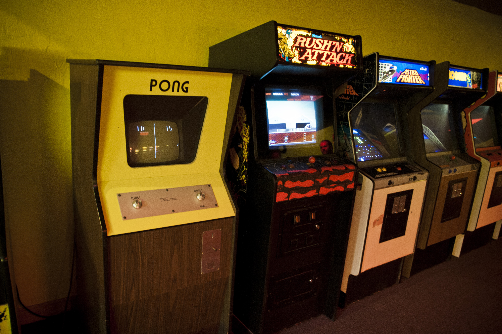

Los videojuegos de arcade son un tipo de videojuegos que originalmente fueron concebidos para las máquinas recreativas (llamadas también, «máquinas de arcade») que desde los años 1970 y 1980 empezaron a estar disponibles en lugares públicos de diversión, centros comerciales, restaurantes, bares, o salones recreativos especializados. Hoy en día el término «arcade» es un término genérico que se utiliza para designar un estilo o categoría de videojuegos, incluso aunque dichos videojuegos ya no sean utilizados en máquinas recreativas sino en casa del usuario en plataformas como la consola o el PC.
juegos de arcade o tambien las maquinitas
Las máquinas son muebles con algunos controles como una palanca y botones, o una pistola, o un volante con freno y acelerador, o una plataforma de baile, o un pádel, o una trackball; dependiendo del juego. Para poder jugar una partida hay que introducir unas monedas de curso legal con el importe necesario o fichas del propio local, hay otras que funcionan con tarjeta magnética o con un chip externo o interno prepagada de la cual se descuenta el precio correspondiente. Estas máquinas son muy utilizadas para diversión y juego. Otras características son que estas máquinas funcionan en su gran mayoría con una placa o board la cual contiene un solo juego. Poco tiempo después surgieron sistemas de cartuchos como lo fue el Neo-Geo que permitía cambiar el juego sin tener que invertir en otra placa. Otro aspecto del juego en estas máquinas es que no se puede detener la acción, cosa que sí sucede en las consolas, ya que el botón start en las máquinas recreativas solo se usa para iniciar el juego, en cambio en las consolas el juego sí puede ser pausado varias veces.
juegos clasicos Arcade

- Pac-man
- Final fight
- Metal slug
- Galaga
- Defender
- tetris
- Busca minas
juegos arcade
ir a tienda arcadeLa enorme popularidad de los videojuegos arcade entre los años 1970 y principios de los años 1980 ocasionó un incremento espectacular de las ventas de estas máquinas recreativas. Este período de la historia de los videojuegos fue bautizado como la Era Dorada de los videojuegos arcade. Aunque la duración exacta de esta etapa sigue siendo motivo de debate, sí hay un consenso en torno a los momentos clave de la misma, entre los que se cuentan el comienzo con la apariencia general de los videojuegos como un mercado de consumo en salas recreativas, consolas domésticas y su evolución en plataformas de computadoras personales, cubriendo el auge de los sistemas de hardware y el origen de los sistemas basados en cartuchos de juegos múltiples en 1971, los estrenos de Pong (1972) y Space Invaders (1978), más la introducción de la tecnología de visualización de vectores en 1979. Los videojuegos arcade de la Era Dorada incluyen las videoconsolas de primera y segunda generación, mientras que el renacimiento de los videojuegos se atribuye a los arcades y videoconsolas de tercera y cuarta generación.